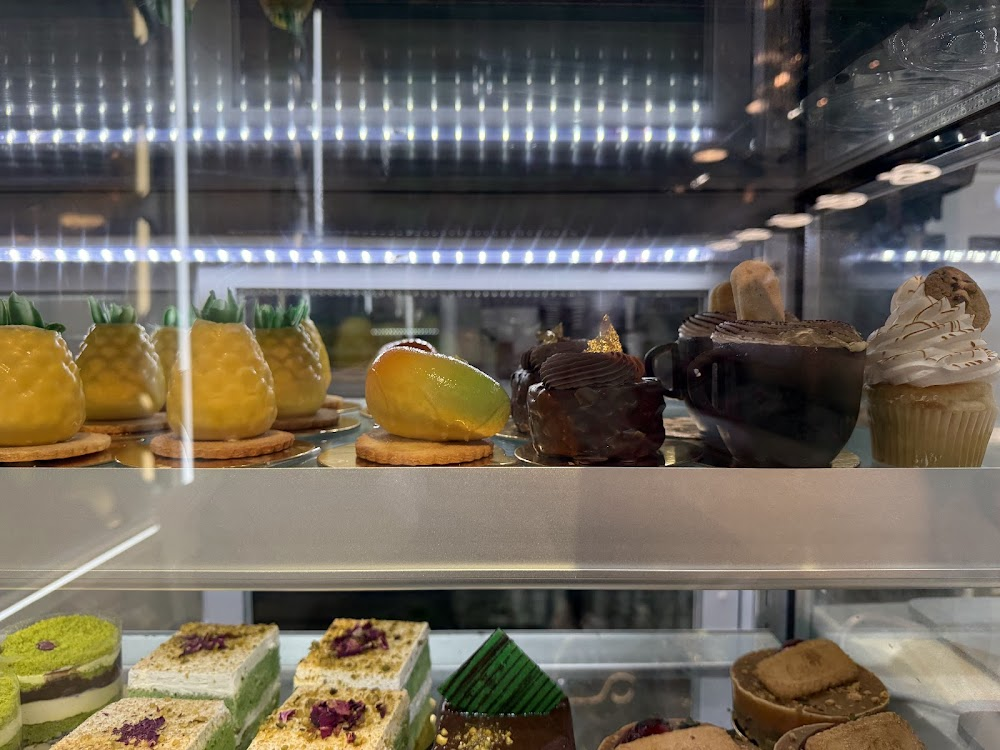
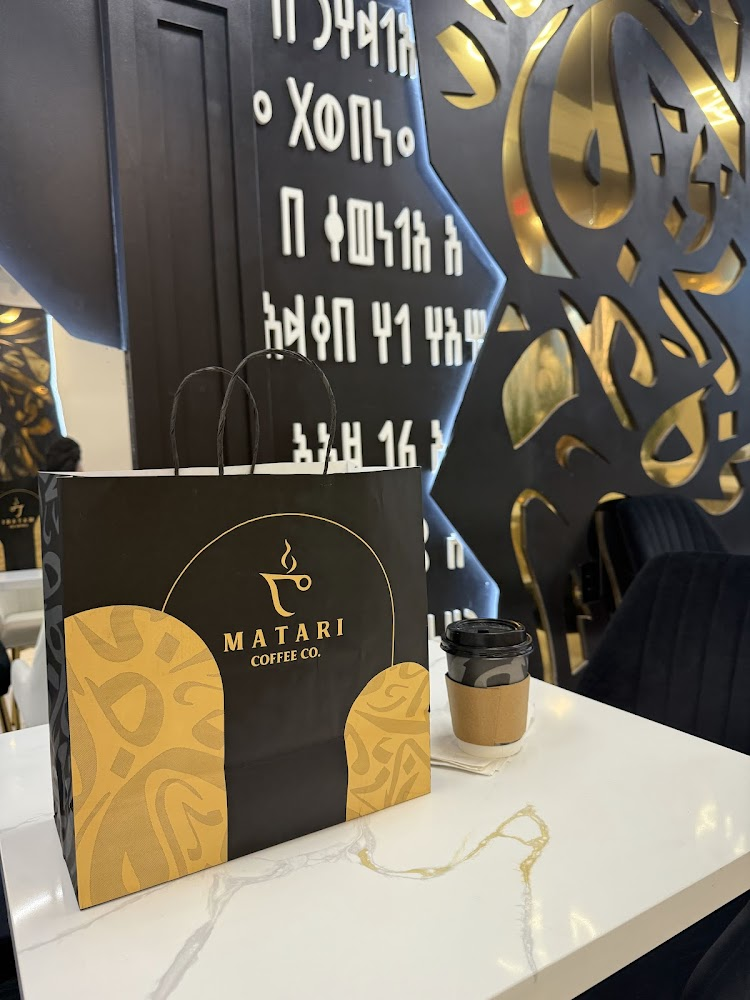

A new cafe opened up near me and I've been meaning to go for a while. As I waited to be picked up, I cut my time by exploring this new cafe. As recommended by the barista, I bought a Mofawar and a Ferrero cake for my sister.
A Mofawar is a medium roast coffee served with cardamom and cream.



